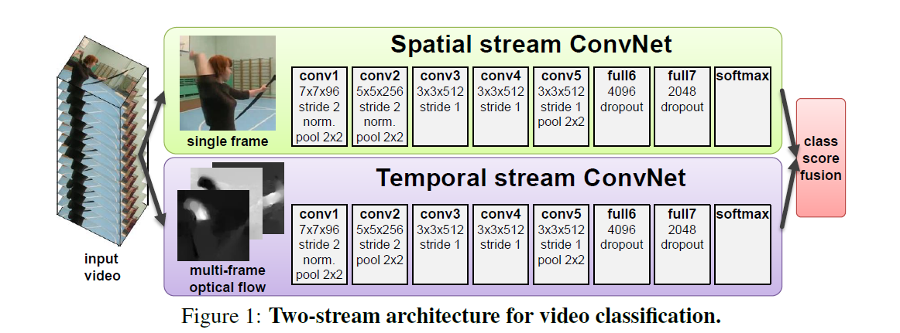

Video Classification Investigation Report
Overview
Video classification, or in our case, more specifically, action recognition, are studied for a long time. There are many traditional as well as deep learning based method developed to address this problem, and the latest action recognition result trained on a large dataset Kinetics can even reach 98% accuracy. Considering the fact that the action we need to classify is not too much, giving enough data and using the pre-trained model on Kinetics, the result can be quite promising.
Tough Points in Video Classification
- The huge computational cost
- How to capture long context and make decision comprehensively
- How to design the classification structure which contain spatiotemporal information
- How to deal with a smaller dataset
Approaches overview
The core idea
- Try to build a workflow which can combine both spatial information and temporal information.
- Try to focus on both frame itself and the motion near each frame.
- Try to make decision based on the whole video rather than only parts of it.
- Try to decrease the computational cost and remove the long pre-process.
Two basic methods
Single Stream Network
There are four ways of fusion, which means combine the information from each frame together to derive the final answer. They are:
- Single frame uses single architecture that fuses information from all frames at the last stage.
- Late fusion uses two nets with shared parameters, spaced 15 frames apart, and also combines predictions at the end.
- Early fusion combines in the first layer by convolving over 10 frames.
- Slow fusion involves fusing at multiple stages, a balance between early and late fusion.
Two Stream Networks

Video can naturally be decomposed into spatial and temporal components.
- The spatial part, in the form of individual frame appearance, carries information about scenes and objects depicted in the video.
- The temporal part, in the form of motion across the frames, conveys the movement of the observer (the camera) and the objects. In fact, the essence of “motion” is optical flow.
Improvement of methods
Firstly I’d like to show a graph which shows an overview of all previous action classification architectures drawn in the paper Quo Vadis, Action Recognition? A New Model and the Kinetics Dataset.
To summarize, there are these kinds of improved methods:
-
LRCN: Long-term Recurrent Convolutional Networks for Visual Recognition and Description
Send each frame to a CNN at first and then uses the features extracted as the input of LSTM.
-
C3D: Learning Spatiotemporal Features with 3D Convolutional Networks
The first time using 3D Conv to process frames.
-
Conv3D & Attention: Describing Videos by Exploiting Temporal Structure
Add a attention mask before send the CNN-extracted feature into LSTM.
-
TwoStreamFusion: Convolutional Two-Stream Network Fusion for Video Action Recognition
Fuse two stream in a smarter way and get a better result.
-
TSN :Temporal Segment Networks: Towards Good Practices for Deep Action Recognition
Select video snippets not completely randomly, but divide the video into k equal-length parts and choose a snippets randomly from each division.
-
ActionVlad:ActionVLAD: Learning spatio-temporal aggregation for action classification
In this work, the most notable contribution by the authors is the usage of learnable feature aggregation (VLAD) as compared to normal aggregation using maxpool or avgpool.
-
HiddenTwoStream:Hidden Two-Stream Convolutional Networks for Action Recognition
It uses a “MotionNet” to take the place of optical flow.
-
I3D: Quo Vadis, Action Recognition? A New Model and the Kinetics Dataset
Mainly used pretrained network by ImageNet and Kinetics dataset. Also, it use different 3D network for images and optical flows.
-
T3D: Temporal 3D ConvNets: New Architecture and Transfer Learning for Video Classification
Transfer a 2-D DenseNet to a 3D one.
Result comparation
Current Thought
As we can see from the analysis above, the I3D is the most computational efficient and accurate method. Also, the pre-trained model of I3D is provided by the author, so we can also take advantage of it. Now I think we should collect enough data of the corresponding action. Moreover, I noticed that there are many new method on Temporal Action Proposals, Temporal Action Localization and Dense-Captioning Events in Videos appearing this year in the competition ActivityNet, I may research into it to get better result later.
Datasets
Codes
- I3D models transfered from Tensorflow to PyTorch
- I3D models trained on Kinetics
- Video Classification Using 3D ResNet